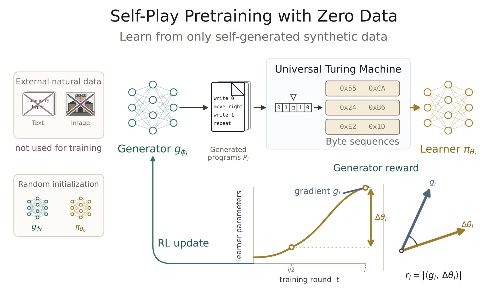
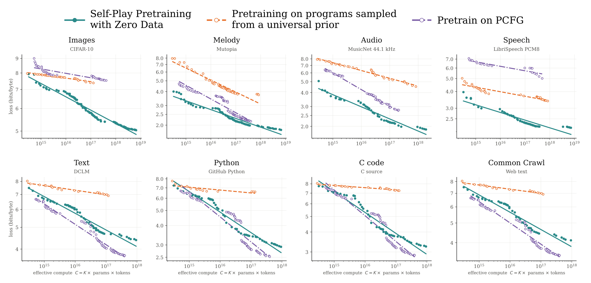
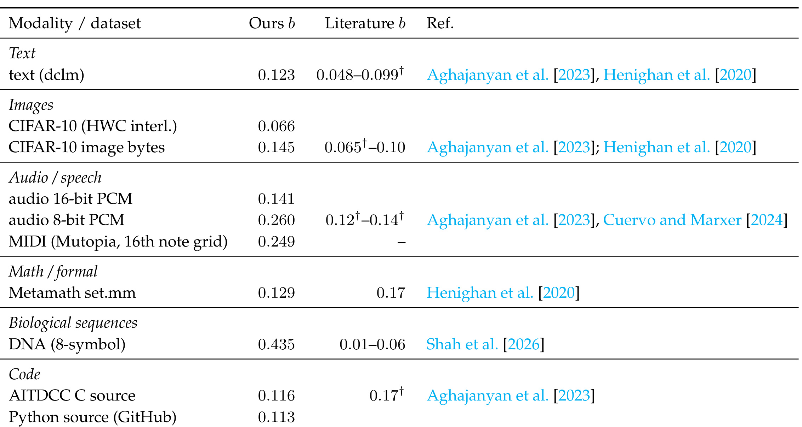
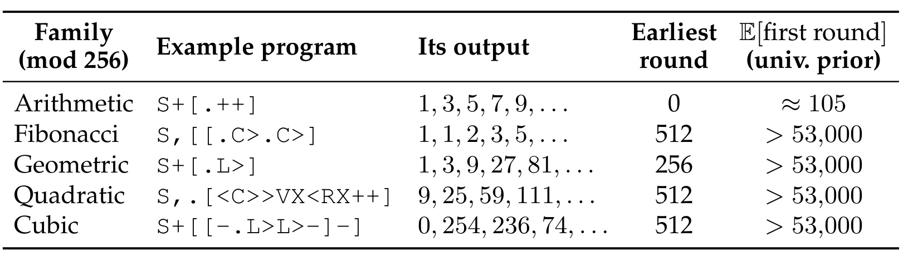
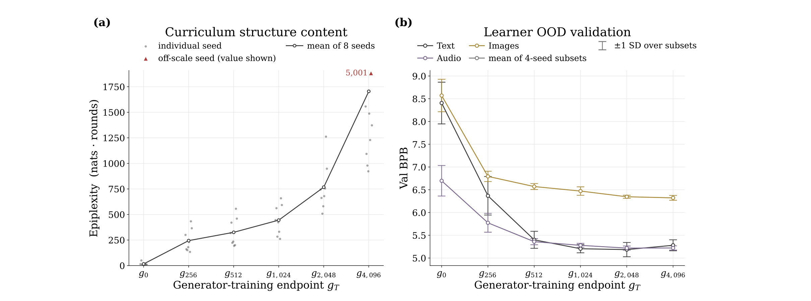
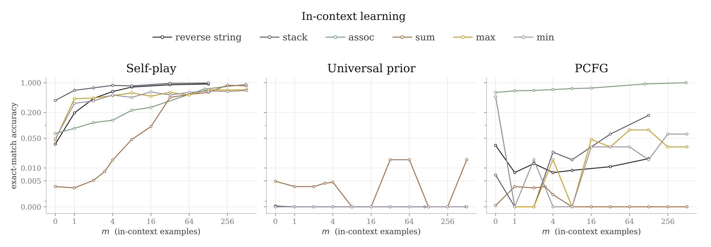
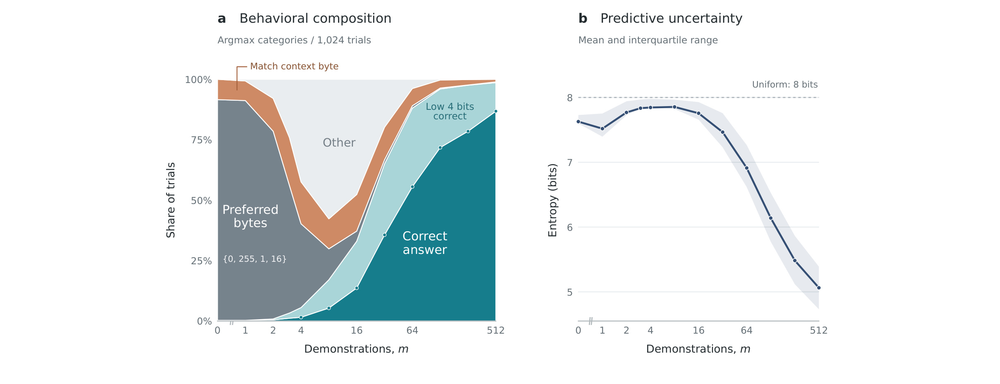
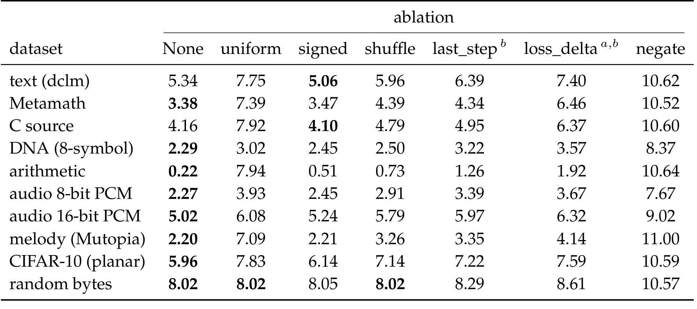
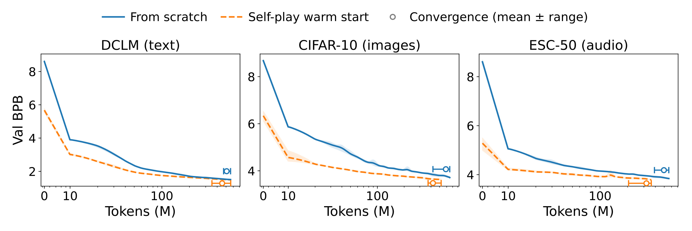

Self-Play Pretraining with Zero Data：从程序自博弈中学习可迁移结构
这篇论文研究如何让随机初始化的模型自己发现有用的预训练数据。共同一作是独立研究者 Aditya Cowsik、特拉维夫大学 Kfir Dolev 和斯坦福大学 Michael Y. Li，合作者包括 G. Bruno De Luca、Nourya Cohen、Noah D. Goodman 和 Yoav Levine；PDF 标注的合作单位还包括 LAPTh、USMB。论文于 2026 年 9 月 24 日首次公开，本文依据当日 v1 的 32 页全文精读，核验日期为 2026 年 9 月 28 日。论文入口。本轮未核验到独立代码或项目页；文中引用的自动微分内核不能视为整套训练系统已经开源。
预训练数据仍主要由人替模型筛选与构造。即便允许程序表达所有可计算的数据生成过程，其中也只有少量结构对当前学习器有用，而且有用性会随训练而改变；能否让模型自行寻找处于其能力边界的数据，并将学到的结构迁移到自然数据？
1. 背景和问题
1.1 从选择语料到选择数据生成过程
大模型预训练通常把数据分布当作外部输入：先收集网页、代码、书籍或领域记录，再通过质量筛选、去重、配比和课程设计决定模型看什么。训练过程可以非常通用，但数据选择依然包含大量人的判断。合成数据并不自动消除这种依赖：如果生成器是已经训练好的语言模型，或者样本来自手写模板、指定题型与人工程序，合成数据仍携带教师模型和设计者对世界的知识。本文想把问题向前推进一步，让产生训练数据的过程本身也成为学习对象，并尽量把领域专有知识排除在梯度训练之外。
这不是要求模型凭空获得世界事实。作者明确区分了依赖特定世界的偶然信息与在不同过程之间共享的预测结构。某个人的姓名、某本书的内容、某种语言的词汇都属于前者；复制、重复、递归、层次组合和简单算术关系则可能属于后者。如果模型先在人工程序输出上学会从上下文寻找这些规律，它即使没有见过自然语料，也可能更容易预测自然数据中的下一个字节。研究真正关心的是这部分结构能否通过计算搜索出来，以及搜索投入增加时，迁移效果是否有稳定规律。
可计算程序提供了一个原则上非常宽的合成数据空间。相比提前选定括号配对、排序或语法生成器，通用机器不把学习对象局限于某个任务族；任何可计算的生成过程理论上都能写成某段程序。但表达能力和可用性是两回事：均匀抽取指令，大量结果会是常量、无意义噪声、短促输出，或者在有限执行预算内几乎不输出内容。理论上包含有价值的数据，不等于在实际算力内有足够概率抽到它。论文因此把数据生成表述为搜索问题：要学习在哪里分配采样预算，而不只是扩大原始样本数量。
这里的“自博弈”也与棋类对弈不同。系统没有两名争夺胜负的玩家，没有外部正确答案给出输赢。它有一个负责提出程序的生成器和一个负责预测程序输出的学习器。生成器的收益来自学习器参数变化中的信号，学习器则用普通自回归损失更新。两者形成不断变化的教学关系：如果某类结构已经学会，再反复提供它的价值可能下降；如果结构完全随机，无论如何努力都学不会，继续增加它也没有收益；理想课程应不断靠近可以学到、但尚未完全掌握的部分。
1.2 为什么高损失不是好的课程信号
一种直接方案是让生成器寻找学习器最难预测的数据。这个方案看似能避免反复练习简单样本，却容易把搜索推向随机噪声。程序只要读取独立随机字节并把它们输出，就可以使预测误差很大，而不必产生任何可复用规律。尤其在字节预测中，均匀分布的下一字节天然携带八比特不可约不确定性；模型在这类样本上得不到稳定进步，生成器却可能一直获得“困难”的奖励。因此，难度和教学价值不能混为一谈。
另一种直觉是奖励一次更新带来的损失下降，但单步变化既受样本噪声影响，也受优化器、参数尺度和当前批次影响。作者最终选择的信号关注较长历史：学习器迄今形成的参数移动方向，可以粗略概括哪些方向长期承载可学习结构；一个新样本的梯度如果与这种移动具有显著关系，它可能延伸已有技能。这个假设不保证每个高奖励程序都有用，但提供了不依赖自然语料标签的内部参照系。消融实验随后检验绝对值、时间窗口与奖励对应关系的作用，而不是把解释当作已证明定理。
本文的实验设计要同时回答三个不同层次的问题。第一，纯程序训练后，模型是否在从未用于梯度更新的自然数据上降低预测损失。第二，下降是否随着模型规模、训练轮数和集成数量增加而形成可拟合曲线。第三，低损失是否对应某些可理解能力，例如从示例中学会关联查询、反转字符串或字节求和。单独一个层次都不足以支撑“通用智能从零产生”的说法；把三类证据组合起来，才比较接近作者所称的早期概念验证。
“零数据”必须按论文实际边界来理解：两套 Transformer 都从随机权重开始，学习器与生成器的梯度训练样本由程序产生，没有先用自然文本预训练的教师模型。然而超参数选择使用 DCLM 与 DNA 验证损失的平均值，作者自己承认这会引入有限的选择泄漏。研究者还选择了指令语言、宏操作、模型架构、优化器、奖励和评测编码。这些设计不是自然语料梯度训练，但也不是完全没有外部信息。因此更准确的结论是“自然数据不参与梯度的自生成结构预训练”，而不是“任何形式的人类知识都不存在”。
1.3 评测对象决定结论范围
所有输入都被编码为字节序列，以同一种下一字节预测接口评测。这个选择有两个优点：不需要每种模态各建一套分词器和模型；也让实验更直接地测试序列规律是否跨域迁移。但字节损失不是语义理解指标。图像相邻像素的相关性、音频波形的平滑性、文本空格与重复片段、DNA 的有限字母表，都能提供可压缩信息。利用这些规律降低损失是有效的预测进展，却不表示模型识别了图片里的物体、理解了语音、证明了定理或掌握了自然语言问答。
这一区分也决定了它与推荐研究的关系。推荐行为序列同样含有重复、顺序、局部模式与上下文检索，但还包含曝光机制、用户意图、商品身份和业务目标等特定信息。程序训练可能为序列模型提供结构性初始化，这只是迁移设想；论文没有用户行为数据、召回准确率、排序 AUC 或在线实验。本文值得读的部分在于数据课程如何适应学习器，以及如何把普遍模式与领域事实分开测量。若直接把结果解读为“推荐模型不再需要真实行为”，就已经超出证据。
从研究风险看，有限程序长度、内存与时间预算还会把“所有可计算过程”的理论空间压缩成非常偏置的实际分布。能在无限资源下表示某个过程，不意味着有限机器可以高效发现它。接下来的方法细节中，回放、变异和宏指令正是为实际搜索服务的工程选择。它们让这个系统能够运行，也提醒读者：论文评估的是一种具体可实现的近似，而不是直接实现了不可计算的通用归纳理论。
2. 方法
2.1 程序空间与字节学习器
原文第 2.1 节定义程序空间，第 2.3 节说明网络。生成器和学习器是参数独立、结构相同的 decoder-only Llama Transformer；前者输出指令，后者输出字节概率。程序执行器位于两者之间，不是另一套神经网络。生成器只需提出离散程序，机器负责执行，学习器只看输出序列。原文以程序前缀 S 和输出前缀 O 区分两种流；生成程序时限制输出 logits 到八个基本指令、十个宏指令和终止符 F，预测输出时则允许完整的 256 字节词表。
符号解释：$x$ 是长度受限的程序，$U$ 是固定通用执行机器，$\omega$ 是随机输入带，$T$ 是输出长度。随机输入使同一段程序可以对应一个输出分布；它既能生成规律，也能生成随机内容，因此奖励必须自行区分二者。学习器训练在执行结果而不是程序源代码上，不会被直接监督去复述生成器发现的程序。

Figure 1 此处只保留原图上部方法子图，下部的缩放和上下文学习结果在实验章使用更完整图表展开。从左到右读取这张图，最关键的接口是程序先经过固定机器执行，再转成字节序列交给学习器；生成器并没有直接生成自然语言教材。图中的外部文本与图片被划去，说明它们没有进入该训练闭环的梯度路径。左下方两套随机初始化网络强调，没有现成大模型充当能力来源。右下的曲线则记录学习器随训练轮数移动的轨迹，当前样本的梯度与历史参数位移共同产生奖励，再沿绿色箭头返回生成器。因而每轮训练的数据分布会受到过去学习结果影响，而非一个固定随机过程不断吐出样本。
图里向量夹角只是奖励直觉，实际公式还有 AdamW 的对角预条件，并且取内积绝对值，不能只按普通欧氏空间的“同向越好”理解。绝对值允许较强反向关系也获得正收益，因此“能力前沿”是作者对经验行为的解释，不是这个图已经提供的严格分类器。原图中的循环还有一个重要时间关系：学习器的历史变化提供生成器目标，而生成器更新后改变未来数据；它并不要求学习器把每个输出对应的程序反推回来。推理阶段若只评测自然数据，使用的是训练后的学习器，程序生成器和执行器都不必参与每个测试样本的预测。这样的职责分离使得训练时搜索复杂性与测试时预测接口可以分开衡量，也让“训练成本”与“模型最终使用成本”不能混用。
执行语言采用 Brainf*ck 风格：指针左右移动、单元加减、循环、输入和输出。为保证所有生成字符串可执行，不匹配括号按无操作处理，环形内存越界时回绕，单元值按 256 取模，程序达到步数、输出或结束边界即停止，提前结束的输出以零补齐。这些约束避免生成器把大量概率浪费在语法错误上，但零填充和短程序本身会形成明显先验。附录还加了清零、值搬移、扫描到零单元、输出存储字符串等十个宏。对照方法使用同样的增强字母表，因此宏不能单独解释自博弈相对固定采样的差异；然而整个系统确实受这套语言设计影响。
每轮的程序池由新生成、局部变异和历史回放三部分构成，所有执行结果都进入学习器训练。设这个池为 $B_e$，池大小为 $M_e$，学习器目标是：
这里 $e$ 是自博弈轮数，$\mathcal L(y_i;\theta)$ 是输出序列内容 token 上的平均交叉熵，$\theta$ 是学习器参数。它没有额外的下游任务标签或语义奖励；生成器负责改变训练分布，学习器仍执行标准下一 token 学习。把这两个层次拆开，能避免把下游零样本效果误写成训练目标里直接优化了自然数据性能。
2.2 用历史学习进展奖励程序
原文第 2.2 节的核心是以历史参数移动为参照的梯度对齐奖励。作者回看当前轮数的一半，而非仅比较相邻两步，定义：
其中 $p(e)$ 指向历史检查点，$\delta\theta_e$ 从当前参数指回较早参数。窗口随训练增长，可以平滑短期噪声，也使早期阶段的误导影响逐渐离开窗口。这里符号方向很重要：它是过去减现在；不要在复现时反过来写后又不检查绝对值和对照奖励的定义。
其中 $r_i$ 是第 $i$ 个程序输出获得的收益，$\widehat v_e$ 为 AdamW 二阶矩估计，$P_e$ 是逐参数的步长缩放，$\odot$ 表示逐元素乘法，$\epsilon$ 防止数值不稳定。外层绝对值使奖励非负。作者没有直接奖励样本当前损失大小，而是奖励其梯度在经优化器尺度调整后的历史移动方向上有多大投影。
直觉上，已经彻底学会的程序输出产生很小梯度，因而奖励小；不可学噪声引起的梯度缺少稳定方向，预期与历史轨迹弱相关，收益也小；仍然困难但延续已掌握模式的样本可能得到较大投影。这里“预期”十分关键：有限批次的噪声不可能保证完全正交，优化器状态也会影响评分。绝对值还可能奖励与原方向相反的结构，这也是为何需要实验而不能仅凭公式宣称它精确测量学习进展。计算上，作者用前向模式自动微分求方向导数，避免为每个程序显式存储完整参数梯度。因为只需要一个梯度与给定向量的内积，不必将所有梯度展开成独立大张量。这样减少的是该评分的实现负担，不意味着奖励计算免费：需要历史参数、当前优化器状态和额外自动微分支持，通用程序执行也有开销。特别是在小模型实验向大模型迁移时，内核兼容、参数检查点内存、吞吐和数值稳定性都属于要单独验证的成本。
2.3 策略梯度、专家迭代与程序记忆
有了每个程序的奖励，生成器通过带 KL 正则的强化学习调整概率。原文的抽象目标为：
其中 $\phi$ 是生成器参数，$g_0$ 为固定均匀指令先验，$\ell(x)$ 包括终止符，$|\mathcal A|$ 是指令字母表大小，$\beta$ 控制正则。先验偏好较短程序，与描述长度思想相似。正则让搜索不至于立即把分布压缩到少量当前高收益程序；它并没有保证探索所有程序，只是为有限搜索提供参照。
为降低方差，奖励在全轮程序池中标准化，回放程序再用序列级重要性比例校正。实现目标可写为：
其中 $\overline r_e$ 和 $\sigma_{r,e}$ 是整轮奖励均值与标准差，$A_i$ 为优势，分母保存程序进入银行时的采样概率。新鲜样本的比例为一；回放样本可能偏离当前策略，所以不能不经校正当成当前分布样本。论文把比例截到从 $e^{-20}$ 到 $e^{20}$ 的范围，限制极端权重，但该范围仍很宽，实践中应观察有效样本量。
$B_e^{\mathrm{mut}}$ 是变异样本集合，停止梯度表示把权重和优势作为当前策略更新的常数。变异不是从有明确概率的提议分布直接采样，所以不能照搬其策略梯度比例，论文把它们排除在这一项之外。但这些样本仍可训练学习器，也可进入下一项监督目标，这一点关系到三个池如何协调。
其中 $[r]_+=\max(r,0)$，$w_i$ 是程序级监督权重，$\lambda_{\mathrm{EI}}=1.0$。专家迭代把高奖励程序重新蒸馏给生成器，帮助保留已经找到的结构；它和策略梯度共同作用，并不是仅运行标准 GRPO 就能完整复现本文。
附录 G 把局部探索进一步具体化。正收益程序按动态最大循环深度和程序长度分到最多 36 个生态位，每个位置保留奖励最高的八个程序，奖励每轮乘以 0.97 衰减，避免过时程序长期占据记忆。变异父代按已占用生态位均匀选择，再做单 token 替换、插入或删除，而不是始终围绕总收益最高的少数程序搜索。普通回放从历史非回放程序库中抽取并重新执行，使用新的随机输入带。整个设计同时处理全局探索、局部改进和遗忘；论文没有为每个记忆组件提供完整独立消融，因此不应为任何单组件认领全部收益。
3. 实验结果
3.1 跨模态缩放与固定先验对照
实验把模型规模、检查点轮数和集成数量共同纳入比较。每种规模用几何网格坐标下降调学习器学习率、生成器相对学习率、批量和 KL 系数，选择信号是 DCLM 与 DNA 验证损失平均值。训练长度上限固定为 34.36B token，使用短 warmup 和常数学习率，随后从长训练的中间检查点构造不同预算。上下文为 4096 token，并对独立初始化模型的预测分布取平均形成集成。因此前沿上的点不一定来自同一单模型，更不应把横轴简单等同于部署一个模型的推理成本。
其中 $K$ 是集成模型数，$N$ 是参数量，$T$ 在此表示训练 token 数，$C$ 为论文图中的有效计算代理；$E$ 是拟合的渐近损失地板，$A$ 是系数，$\alpha$ 是指数。与方法章输出长度同用字母属于原文记号重用，此处按上下文区分。前沿要求一个配置的损失比所有不高于其计算预算的已观察配置更低。这个定义会选择较好检查点，不能把前沿拟合误读为每次独立训练都服从同一条光滑曲线。

Figure 2 上排是图像、旋律、音频和语音，下排是自然文本、Python、C 代码与网页文本。纵轴为每字节比特损失，越低越好；横轴为有效计算量。青色自博弈在多种模态中持续下降，橙色固定程序先验普遍改善较慢。由于两者共享增强后的指令字母表，这个比较支持“自适应分配程序采样概率”具有实际价值，而不仅是允许生成复杂程序就已经足够。需要同时看紫色 PCFG：它在文本和代码上的前沿更强，说明手工设计、与目标域匹配的层次语法先验仍可能优于更通用的搜索。论文的优势是跨不同模态的覆盖和稳定性，而不是对每一个数据集都取得最低损失。
图中每条线终止的位置也有具体含义：作者没有找到在更高预算下继续降低前沿损失的已测配置，就停止绘制该前沿；这不是算法的理论性能上限。几个面板的纵轴范围、数据编码和噪声地板不同，不能把曲线视觉斜率直接跨面板排序。尤其音频低损失可能大量来自波形连续性，文本则存在更复杂的符号与世界事实缺口。字节单位提供统一接口，却没有让各模态的任务语义变成相同难度。图里可核验的是三种合成分布在各自数据集上的相对迁移效果，尚不足以推断实际语音识别、代码补全或图像理解性能。
还要把有效计算与端到端成本分开。横轴代理没有单独展示生成器采样、程序执行、奖励方向导数、超参数搜索和所有失败种子的全部墙钟开销。它适合论文内部的缩放分析，却不能直接拿来与商业模型训练账单比较。自然数据没有进入梯度更新，仍通过调参影响系统选择，这一事实和图中零样本迁移应同时报告；只写“完全未接触自然数据”会使实验边界失真。

Table 2 给出拟合指数：DCLM 为 0.123，HWC 交错编码的 CIFAR-10 为 0.066，另一图像字节设置为 0.145，十六位与八位音频分别为 0.141 和 0.260，旋律为 0.249，Metamath 为 0.129，DNA 为 0.435，C 与 Python 为 0.116 和 0.113。这些数字是损失相对于计算代理的衰减参数，不是准确率，也不是每增加一倍训练就增加这么多百分点。因为还有损失地板和前系数，两个任务指数接近并不等于最终误差接近。读表时尤其应保留两种图像编码的区别，它们本身就展示了序列化规则能够明显改变可学习的局部规律。
文献列并不是同一实验协议下重跑的对照。部分数值从已发表的 Chinchilla 形式转换而来，不同研究的数据、架构、token 定义、预算和拟合区间都可能不同。作者把“量级大致接近”视为普遍结构解释的线索，不能据此宣布程序预训练已经追平自然数据训练。DNA 是明显例外：其八符号表示和完整 256 字节预测空间之间存在很容易学习的字母表差异。仅认识可出现的八个值，就可把均匀字节基准的八比特降到三比特；再降低损失才更多涉及碱基分布、软掩码、重复片段和短程模式。这个事实要求谨慎解释高指数，而不是把它称为最强生物理解能力。
作者在第 4 节提出解释性假设，把自然数据中的偶然信息量与普遍结构量分开：
$D_c$ 为特定世界信息量，$D_u$ 为通用预测结构量，$G$ 为系数；这里将原文系数 C 改记 G，以免与计算量混淆。若自博弈只增长后者，前者可并入较大的常数地板，并得到随训练量下降的幂律项。这个分解并没有被直接测量或唯一识别，属于解释观察现象的 ansatz。指数接近既不证明全部自然数据收益都来自通用结构，也不证明继续扩大同样系统就能无限逼近自然语言模型。
3.2 数学结构发现与课程质量
论文用可识别程序族给出搜索结果的具体例子，而不只展示连续损失曲线。这部分需把程序发现速度与学习器迁移性能分开：能生成一个斐波那契序列，说明搜索找到某种结构；它不直接证明学习器因此获得全部对应算法能力。两者之间仍需要后面的固定语料重训和上下文测试补证。

Table 1 列出模 256 意义下的等差、斐波那契、等比、二次与三次差分序列。等差族在保存的第零轮已经可见，等比在第 256 轮可见，另外三个较复杂族在第 512 轮可见。随机程序先验抽取了 1.64 亿个程序，只有等差族出现过，计数为 1526；其每程序命中概率估计约为百万分之九点三，在每轮 1024 个新程序的换算下，期望首次发现轮数约 105。其余四族零命中，作者按零事件统计给出共同的一侧置信上界，再换算为超过 53000 轮的期望发现下界。这是统计界，而不是实际等到第 53001 轮才看到结构。
检测标准防止把任意短片段或退化常数尾巴算成发现。允许最多三十个不相关前导字节，后面的序列需满足指定递推或有限差分条件；完整匹配区域和尾窗都要求至少三十的最小周期。自博弈程序仅每隔 256 轮保存一次，而随机基线逐轮检查，所以自博弈表中的轮数是最早保存观察的上界，不能当成真实第一次出现时刻。附录 Table 3 重复了这张表，本文不再重复截图，而把这些限定合并在这里。
这组实验最有力的结论是：在相同宏指令空间内，学习到的生成分布更容易发现这些已定义结构族。它不证明所有有用程序都变容易，也没有估计四个零命中族彼此的相对稀有程度。表中的程序是例子，随机基线命中任何符合该族定义的程序都算成功，不是要求逐字符复制示例。因此优势不能简单归因于作者挑选了一串特定难猜代码。另一方面，族的定义是在数学上易识别的有限集合，未知类型的结构和无效高奖励程序可能没有在这个表中体现，完整理解课程仍要看统计分布和迁移实验。

Figure 3 尝试排除“只有当前学习器越来越好，生成器并没有真正进步”的解释。每个生成终点 T 从此前均匀间隔的十六个快照采样，组成包含 4.19M 程序的固定语料，再训练全新的百万参数学习器一个 epoch，保持 token 预算一致。这样改变的主要是生成课程来源，而非沿用原来自博弈学习器的参数。左图 epiplexity 衡量有限计算学习器收敛前累积的额外训练损失，后期课程可提取的结构量整体增加；右图对应新学习器在未见文本、音频与图像上的损失，训练终点较晚的生成器通常提供更好的迁移数据。
这里的结构量不是香农熵，也不是文本包含多少事实。随机噪声可以熵很高，却没有可学习的系统规律；epiplexity 想捕捉的是相对于受限学习器的可学习复杂性。图中左侧可见种子差异和一个超出纵轴范围的点，因此不能把均值曲线理解为每个种子都平滑增长。右侧使用集成或种子子集汇总，误差条与原始独立单模型波动也要区分。一个较晚终点的数据集中混合了此前十六个快照，并非仅取最后一个快照，因此实验检验的是“截至该终点的课程组合”，不是最后生成器在所有方面都优于每个早期生成器。
从曲线形态看，额外结构量继续增长时，域外损失的改善逐渐变缓；这提示新增可学结构未必与每个自然数据集同等相关。作者把总体趋势解读为课程持续带来非重复价值，这个结论有实验支持，但不应进一步声称课程能无限维持等速的下游收益。对应用研究而言，这一设计值得借鉴：先冻结不同阶段合成语料，再用同规格新模型重训，能比直接比较自博弈途中指标更清楚地区分数据质量和权重继承。
3.3 上下文学习与求和行为变化
上下文实验不给学习器额外梯度。输入由若干“哨兵字节、任务输入、任务输出”例子组成，最后给出新输入让模型续写。任务包括反转字符串、栈操作、关联查询、模 256 求和以及最小值和最大值。它们检验的结构关系相对明确，但输入仍是人工编码的字节任务，不能直接等同于自然语言指令遵循。论文图示使用贪心输出的精确匹配成功率；附录任务定义还描述了正确 token 概率的得分视角，读者应以具体图的指标标注为准，避免混合两种统计量。

Figure 4 三个面板依次对应自博弈、通用程序先验和 PCFG。横轴是给定示例数，纵轴是精确匹配准确率，图中采用了非均匀刻度。自博弈训练的模型在反转字符串、栈和关联查询上，示例足够时接近百分之百；求和、极值也随着示例增加明显改善。固定通用先验几乎没有形成稳定的同类能力。PCFG 对关联查询较强，但对其他任务的迁移较弱。因此应写“自博弈产生更广的这一组上下文能力”，而不是“其他合成训练完全没有上下文学习”。紫色面板中关联查询的高表现，正是后一个绝对说法的反例。
几个任务分别强调不同序列操作：关联查询需要从已显示的键值关系中找回结果，反转要求动态位置对应，栈操作要求维护进出次序，求和涉及算术规律。能在没有梯度更新的情况下随示例改变输出，是比总体字节损失更具体的迁移证据。不过这些任务仍与程序语言容易表达的结构接近；它们没有覆盖长篇论证、知识问答、工具使用或开放域规划。模型在零示例极值任务已有约百分之六至八的准确率，作者归因于复制先前 token 的先验，这说明非零起点不一定代表它已经掌握题意。需要看示例增加后的变化，而不是只比较零样本的一两个绝对值。
对复现而言，应固定样本生成器、输入长度、字节词表、示例顺序、贪心解码规则和独立测试实例数量。关联查询先展示字典再重复抽取键值对，与从未见过的键要求泛化完全不同；字节求和按 256 取模，也不是任意长度整数加法。本文原文的任务成功率没有给出推荐或语言系统通用性能的映射，后续若迁移到这些系统，必须另设评测，并保留纯复制、随机猜测、固定程序先验等对照，才能确定收益来自哪种结构。

Figure 5 把求和性能变化拆成可观察的行为类别。左侧在 1024 个试验中统计预测是偏好字节、复制上下文字节、仅低四位正确、完整正确还是其他结果；右侧展示预测熵的均值与四分位范围。开始时模型偏向零、二百五十五、一和十六等训练先验中常见字节。少量示例后，它转向复制，再在早期错误被示例否定时变得不确定，熵一度接近均匀字节分布的八比特。约四个示例后开始出现低四位正确，更多示例使完整求和比例增加，模型才逐步变得更确信。
这个轨迹有价值，因为它展示了“信心下降”不必意味着学习失败。在排除错误简单规则的过程中，预测分布先变宽，再围绕更合适的结构集中，是与数据一致的行为描述。它也说明不能只用平均准确率一条线解释模型的全部变化：同样一次错误，有的源于复制，有的已正确捕捉低位关系。与黑盒性能曲线相比，类别分解提供了可继续追踪的中间现象，未来可以在训练阶段检查哪些程序导致哪些错误模式变化。
但“策略”在此主要由输出类型推断，作者没有通过神经内部因果干预证明模型运行了特定加法算法。低四位正确也可能由某些局部统计路径产生，而非显式逐位进位程序。右侧熵是全部字节分布的不确定性，不等于对算法正确性的校准置信度。最稳妥的结论是：模型会随着上下文证据改变可解释的输出偏好，且这种改变与求和准确率提升相伴。把它描述成模型“主动反思后发现加法原理”会加入论文未检验的心理过程。
3.4 奖励设计的消融边界
奖励公式通过若干小规模候选搜索后选定，因此消融比直觉解释更重要。附录 Table 5 在百万参数模型上比较完整奖励、固定均匀程序、去绝对值、打乱奖励、一步历史窗口、实际单步损失差和反号奖励。每种改动只变一个奖励属性；表中为最终轮检查点在每数据集 256 条保留序列上的集成 BPB，通常四个种子，但部分异常运行另有说明。

Table 5 的 None 意味着没有消融，即标准奖励，不是没有奖励。以 DCLM 为例，标准值 5.34、均匀采样 7.75、带符号版本 5.06、打乱 5.96、单步窗口 6.39、损失差 7.40、反号 10.62。这同时给出两点结论：自博弈奖励相对均匀程序确有收益；取绝对值并非在所有数据集最优，因为文本和 C 代码的带符号版本分别达到 5.06 和 4.10，优于标准的 5.34 和 4.16。标准奖励在更多模态和多数行更好，才是原文能够支持的综合判断，不能写成“绝对值处处获胜”。
打乱程序与收益的对应关系后，Metamath 从 3.38 恶化到 4.39、旋律从 2.20 到 3.26、图像从 5.96 到 7.14，说明只有收益数值的边缘分布不够，奖励必须对上具体程序。单步历史和实际损失差也明显弱于长窗口对齐，但这不意味着所有直接学习进展奖励都不可行；被比较的是文中具体实现。尤其这两种方法在种子间呈双峰，一些种子发散到很差的损失，集成会混入这些不稳定结果。损失差有一个种子在第 2587 轮停止，最终只用三个种子，不能把全表机械标注为统一四种子协议。
随机字节行提供有用的负对照：标准、均匀与打乱版本约为 8.02，比特数接近均匀不可预测基准，意味着系统没有神奇预测独立随机数。反号版本却达到 10.57，甚至比均匀预测更差，说明错误课程能够使模型形成不合适的高置信分布。音频、DNA 和数学行也表现出同样风险。表的证据偏向“学习器历史方向是有用课程信号”，却还没有分离回放、变异、专家迭代和 KL 各自贡献，也没有证明这些参数设置对大模型依然稳定。复现时应保留逐种子结果，不只报告一个被集成平滑后的均值。
3.5 自然数据预训练的热启动价值
附录 A 进一步问：程序阶段学到的东西，在随后允许使用自然语料时是否仍有价值。作者取一个 24.4M 参数模型，比较随机初始化和最终自博弈检查点初始化，在 DCLM、CIFAR-10、ESC-50 上做正常预训练。两组分别调学习率和权重衰减，固定每模态语料，训练到验证损失平台后再做两百步余弦退火。这个实验与前面的“自然数据不做梯度更新”不同，它有意进入下一阶段，测初始化怎样改变真实数据学习速度。

Figure 6 橙色是自博弈热启动，蓝色是随机开始。横轴是后续自然数据 token 数，纵轴是验证 BPB，空心标记表示收敛 token 数的均值和种子范围；四个种子的带状范围并非置信区间。热启动起点更低，在随后的学习轨迹中也更早达到同一损失水平。正文给出 ESC-50 达到收敛的量为 320M 对 496M token，CIFAR-10 为 421M 对 588M。按这些原文数量计算，后续自然训练 token 分别减少约百分之三十五点五和百分之二十八点四；这是本文的算术换算，不是另一个在线指标。末期损失差距收窄，最清晰的收益是学习速度和自然数据使用效率。
必须强调，图没有计入前面自博弈预预训练本身的成本。作者把它看成一次性成本，可以在多个下游训练中摊销，并用同一个检查点初始化三个模态。这个解释在需要反复训练下游任务时可能合理，但不能从图中直接得出端到端省算力或省钱的比例。若只训练一个下游模型，前置程序搜索开销可能超过后续节约；如果检查点能被大量复用，结论又可能改变。应统计完整成本并明确复用次数，才有工程比较意义。
数据量口径也应保留：划分验证集后的语料约为 DCLM 255M、CIFAR-10 146M、ESC-50 152M token，训练会跨多个 epoch 重复使用，因此收敛 token 数不是独立新数据数量。每组分别在学习率与权重衰减网格上选择最低平均收敛损失，使两种初始化都有调优机会，但增加了研究搜索成本。最终结果还局限于不到二千五百万参数的模型和字节接口。真正要将它用于语言预训练，应继续比较更大模型、普通分词、固定总预算及下游语义任务，才能确认这份初始化价值是否跨尺度保留。
4. 总结
这篇论文的贡献可以收束到一个具体实验命题：随机初始化的双模型系统，在可执行程序空间中通过学习进展奖励寻找训练分布，能够比固定程序先验更有效地产生跨域可迁移结构。支持它的证据不止一条曲线：固定语料重训显示生成课程质量确实变化，程序族发现显示搜索能找到可识别规律，上下文任务显示学习器形成了一些从示例适应的能力，热启动实验说明这些权重在后续自然数据训练中仍有价值。它们共同构成一个值得继续研究的概念验证，却没有证明自然数据预训练可以被完全替代。
最值得借鉴的方法是把“样本困难”改成“样本与已发生学习的关系”，再把全局采样、局部变异和记忆回放组成动态课程。对于推荐序列或用户行为建模，可以设想先用程序构造重复购买、顺序依赖、栈式回访和键值关联等结构任务，再观察真实行为数据学习是否加速。但这只是迁移假设。程序字节里的通用规律不包含商品语义、兴趣分布、曝光偏差和业务转化，因此还必须用真实领域数据训练与评测，不能从本文推导出零行为推荐方案。
对大模型预训练，更直接的方向是把它看作可复用初始化研究。先在不携带世界事实的程序分布上获得某些序列操作偏置，再学习语言和知识，可能帮助区分“学会如何从上下文提取规律”和“记住什么事实”。这个研究视角比单纯追求更多合成 token 更有解释力，也有利于制定对照：等计算随机程序、专门 PCFG、手写算法混合、自然数据小样本预训练与自博弈课程应放在同一成本账本里，才能判断自动课程的额外复杂度是否值得。
当前最主要的限制有四类。首先，模型都不到 25M 参数，后续更大规模能否稳定自博弈仍未知；程序搜索和方向导数可能改变实际瓶颈。其次，DCLM 与 DNA 参与超参数选择，自然数据梯度隔离不等于完全无测试相关信息。再次，字节损失和人工算法任务没有证明开放域语义能力，PCFG 在语言与代码领域还更强。最后，计算代理、集成前沿、后续自然训练 token 节省和总墙钟成本是不同指标；若不分开，很容易把研究现象包装成未经验证的工程优势。
我会优先跟进三项实验证据。第一，在完整训练代码可得后，用较小规模复现 Table 5 的逐种子不稳定性，核查有符号与绝对值奖励为什么在不同模态互有胜负，同时记录奖励计算的实际吞吐。第二，冻结不同生成阶段的数据，在相同总预算下对新模型重训，并把调参验证集和最终测试集严格分离，检查 Figure 3 的收益是否超出选择偏差。第三，用同一热启动检查点跨多个真实任务摊销成本，报告需要复用多少次才有可能回本，并同时检查语义评测而非只看 BPB。
阅读时应保留作者解释中的层级差别：程序可表达所有可计算结构是理论动机，梯度对齐是一个经验有效的代理，普遍与偶然信息分解是解释性假设，跨域下降和部分上下文能力才是当前直接观测。把这些层级拆清楚，既不会因为“零数据”标题夸大结论，也不会因为模型小就忽视它对数据生成研究提出的可检验问题。后续最有价值的进展，应是更严格独立验证、更透明成本、更大尺度稳定性和真实任务收益共同出现。